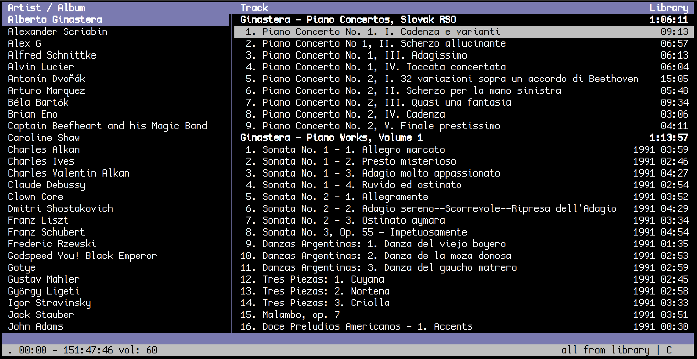

This blog post will detail how I've managed to replace music streaming services like Spotify and Google Play Music with open source Linux alternatives.
youtube-dl and ffmpegIf one wanted to (hypothetically) download music from YouTube, where there is usually a precompiled playlist of a full album, the best tool would be (hypothetically) youtube-dl. I've also tinkered around with ytmdl but found it to automate parts of the process that aren't particularly difficult on their own (searching for playlists from the command line versus just in a browser, for example). To download an album:
youtube-dl -f 'bestaudio[ext=m4a]' [PLAYLIST URL]And if tagging music is your thing, then I find converting everything to mp3 to be easiest (I'm sure audiophiles would cringe at this, sue me). A little shell script tomp3 (placed in ~/.local/bin, granted it's in $PATH) will convert any audio format to mp3:
#!/bin/sh
ffmpeg -i "$1" -vn -ar 44100 -ac 2 -b:a 192k "${1%.*}.mp3"To convert all audio files downloaded to mp3:
find *.m4a -type f -exec tomp3 {} \;eyeD3For tagging, I've used eyeD3. For an example of tagging music downloaded from a playlist,
eyeD3 --artist "[ARTIST]" *.mp3 # Tag artist name
eyeD3 --album "[ALBUM]" *.mp3 # Tag album title
eyeD3 --track 1 01.mp3 # Tag track number
eyeD3 --title "First Song" 01.mp3 # Tag track title
eyeD3 --add-image "cover.png:FRONT_COVER" *.mp3 # Tag album artThese tags are usually enough to sort through my music, but eyeD3 supports tagging all ID3 metadata.
cmusI've defaulted on cmus, mostly because of its ease of use and vim-like keybindings. ncmpcpp supports tagging natively, and definitely has more potential for eye candy with embedded album art and audio visualizations, but cmus gets the job done just fine (without messing with daemons). The only two commands you need to know:
:add [MUSIC DIRECTORY]
:update-cache
No prizes for looks :)
polybarOn my Android phone, I use Musicolet. It's impressive that freeware like Musicolet can be more featureful than Google Play Music, which I used previously.
In order to transfer music from a computer to an android phone, android-file-transfer-linux works great.
Finally, I like to have a some indication of what music is playing. I've used cmus-notify before, but have since moved away from desktop notifications. Instead, a module in polybar can be added easily with a small shell script, found in the top comment of this Reddit thread.